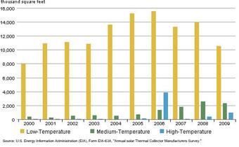
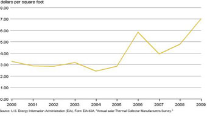

{kind=link}
{kind=link}
Renewable & Alternative Fuels
Solar Thermal Manufacturing Activities
Release Date: December 2010 | Next Release Date: Discontinued | full report
Previous Issues
Overview
Total shipments26 of solar thermal collectors decreased dramatically, falling from 17.0 million square feet in 2008 to 13.8 million square feet in 2009, a decline of almost 19 percent. Total shipments in 2009 were down 33 percent from the 2006 record level of 20.7 million square feet (Figure 2.1 and Table 2.1).
Figure 2.1 Total Solar Thermal Collector Shipments, 2000-2009
 figure data
figure data
Background
Solar thermal collectors are classified as low-, medium-, and high-temperature collectors:
- Low-temperature collectors provide low-grade heat (less than 110 degrees Fahrenheit), through either metallic or nonmetallic absorbers, and are used in such applications as swimming pool heating and low-grade water and space heating.
- Medium-temperature collectors provide medium-grade heat (greater than 110 degrees Fahrenheit, usually 140 degrees to 180 degrees Fahrenheit), either through glazed flat-plate collectors using air or liquid as the heat transfer instrument, or concentrator collectors that concentrate the heat of incident insolation to greater than "one sun,"27 and are mainly used for domestic hot water heating. Evacuated-tube collectors are also included in this category.
- High-temperature collectors are parabolic dish or trough collectors designed to operate at a temperature of 180 degrees Fahrenheit or higher, and are primarily used by utilities and independent power producers to generate electricity for the grid.
The solar thermal collector performance rating is an analytically-derived set of numbers representing the characteristic all-day energy output of the solar thermal collector under standard rating conditions, measured in Btu per square foot per day (Btu/ft2/day). In 2009, the average solar thermal performance rating for low-temperature collectors (metallic and nonmetallic) was 1,239 Btu/ft2/day, medium-temperature (air) was 971 Btu/ft2/day, medium-temperature (integral collector storage/thermosiphon) was 913 Btu/ft2/day, medium-temperature (flat-plate) was 981 Btu/ft2/day, medium-temperature (evacuated-tube) was 973 Btu/ft2/day, medium-temperature (concentrator) was 2,196 Btu/ft2/day, and high-temperature (parabolic dish/trough) was 1,262 Btu/ft2/day (Table 2.14).
Industry Status
In 2009, there were 88 manufacturers and/or importers active in manufacturing, importing, and/or exporting solar thermal collectors, an 18.9-percent increase from the 74 companies operating in 2008. These companies shipped 13.8 million square feet of solar thermal collectors in 2009, compared to 17.0 million square feet in 2008 (Figure 2.1 and Table 2.1).
Of the 88 companies reporting solar thermal collector shipments in 2009, many manufacturers also reported being involved in one or more of the following solar thermal-related activities (Table 2.19):
- 59 designed collectors or systems.
- 27 developed prototype collectors.
- 23 developed prototype systems.
- 61 were involved in wholesale distribution.
- 31 were involved in retail distribution.
- 27 installed collectors.
In addition, several manufacturers are planning to introduce new solar thermal-related products in the 2010 (Table 2.16):
- 4 plan to introduce new low-temperature collectors.
- 16 plan to introduce new medium-temperature collectors.
- 11 plan to introduce new high-temperature collectors.
In 2009, employment in solar-thermal-related activities totaled 1,321 person-years,28 a nearly 22 percent increase from the 2008 level (Table 2.18). The average employment per company was 15 person-years, compared with 14.6 person-years in 2008.
Fifty-six companies had 90 percent or more of their total company-wide sales revenue in solar thermal-related products, 7 companies had 50 to 89 percent, 12 companies had 10 to 49 percent, and 13 companies had less than 10 percent (Table 2.20).
In 2009, the solar thermal industry remained highly concentrated, with the 5 largest companies accounting for 79 percent of total shipments. This concentration, however, was the lowest recorded in the past 10 years (Table 2.17). The decrease is likely due to the new start-up companies that have entered the market over the last three years.
Solar Thermal Collector Shipments
In 2009, low-temperature collector shipments totaled 10.5 million square feet, about 3.5 million square feet less than the shipments in 2008 (Figure 2.2 and Table 2.3). Nearly 94 percent of low-temperature collectors are used in the residential sector, primarily for pool heating (Table 2.13). However, shipments to the pool heating market fell by more than 25 percent in 2009 compared with shipments in 2008, due partly to declines in U.S. home sales and prices, and the economic downturn.
Shipments of medium-temperature collectors totaled 2.3 million square feet in 2009, nearly 10 percent less than the shipments of approximately 2.6 million square feet in 2008 (Figure 2.2 and Table 2.3). The decrease in shipments is believed to be mainly due to the economic recession. Approximately 87 percent of medium-temperature collectors are used for hot water heating (Table 2.13).
High-temperature collector shipments, primarily for utility-scale concentrating solar power (CSP), totaled 978 thousand square feet and represented more than 8 percent of total shipments in 2009.
Figure 2.2 Solar Thermal Collector Shipments by Type, 2000-2009
{kind=link}
figure data
Total Revenue and Average Price
The total revenue29 of solar thermal collector shipments was $96.7 million in 2009, an increase of nearly 19 percent from $81.3 million in 2008 (Table 2.12). Revenue of low-temperature collector shipments was $20.4 million, a 23-percent decrease compared with the revenue of $26.5 million in 2008. Revenue of medium-temperature collector shipments was $51.5 million, about a 3-percent increase compared with the revenue of $50.1 million in 2008. Revenue of high-temperature collector shipments was $24.8 million, an increase of about 435 percent compared with the revenue of $4.6 million in 2008.
The average price for low-temperature collectors was $1.94 per square foot in 2009, a nearly 3-percent increase from $1.89 per square foot in 2008. The average price for medium-temperature collectors increased 14 percent from $19.57 per square foot in 2008 to $22.32 per square foot in 2009. The average price for high-temperature collectors increased nearly 112 percent from $11.96 per square foot in 2008 to $25.32 per square foot in 2009. Overall the average price for total shipments increased more than 46 percent, from $4.80 per square foot in 2008 to $7.01 per square foot in 2009 (Figure 2.3 and Table 2.12). The fluctuation in average price was heavily influenced by custom-made collectors, which includes most high-temperature and some medium-temperature collectors. These collectors are designed for limited, specialized applications, and their average prices are much higher than the conventional collectors.
Figure 2.3 Solar Thermal Collector Average Price, 2000-2009
{kind=link}
figure data
Domestic Shipments
Domestic shipments of solar thermal collectors decreased almost 17 percent from a year ago to 12.2 million square feet during 2009. Compared to the 2006 record level, the 2009 level was more than 37 percent lower (Table 2.2).
The residential sector is the largest domestic market in the United States for solar thermal collectors. Solar thermal collectors shipped to the residential sector in 2009 totaled 10.2 million square feet, approximately 84 percent of total domestic shipments (Table 2.13). This market sector primarily involves the use of low-temperature solar collectors for pool heating and medium-temperature solar collectors for water heating. The second largest domestic market for solar thermal collectors in 2009 was the commercial sector, which accounted for nearly 8 percent of total domestic shipments.
The largest end use for solar thermal collectors shipped in 2009 was for swimming pool heating. Pool heating accounted for 73 percent of the total domestic shipments. The second largest end use in 2009 was for domestic hot water heating, which accounted for more than 16 percent of the total domestic shipments (Table 2.13).
More than 33 percent of the total domestic shipments in 2009 went to the wholesale market, nearly 47 percent to retail distribution, almost 3 percent to exporters, less than 8 percent to installers, and more than 9 percent directly to end users (Table 2.11).
Complete Systems
Of the 88 active companies in 2009, 62 companies accounted for shipments of 75,066 complete solar thermal systems. These systems accounted for nearly 6 million square feet, or more than 43 percent, of the total solar thermal collectors shipped in 2009. The revenue from these solar thermal system shipments was reported as approximately $159 million (Table 2.15).
Origin of Shipments
Imports of solar thermal collectors totaled almost 3.5 million square feet in 2009 (Table 2.7). More than 57 percent of all imports were low-temperature collectors (nearly 2 million square feet). These imports originated in thirteen foreign countries, and about 61 percent (2.1 million square feet) of the solar thermal collectors were imported from Israel (Table 2.8).
In 2009, 73 percent (10 million square feet) of all solar thermal collectors were manufactured in five states (in order of descending volume): California, New Jersey, Florida, Arizona, and Virginia, with 61 percent (8.4 million square feet) of the total shipped from California and New Jersey (Table 2.4).
Destination of Shipments
Export shipments totaled roughly 1.6 million square feet in 2009. About 1.5 million square feet, or more than 98 percent of total exports, were low-temperature solar thermal collectors (Table 2.9). The export market accounted for about 11 percent of total shipments and was dominated by sales to Canada (nearly 32 percent), Mexico (about 25 percent), and France (13 percent) (Table 2.10).
In 2009, almost 12.2 million square feet of domestic solar thermal shipments went to all 50 States, the District of Columbia, the Virgin Islands, Guam, and Puerto Rico (Table 2.6). Nearly two-thirds were shipped to the top five destinations (states): Florida, California, Arizona, Hawaii, and Oregon. California and Florida received 53 percent of total shipments (Table 2.4 and Table 2.6).
Contact: